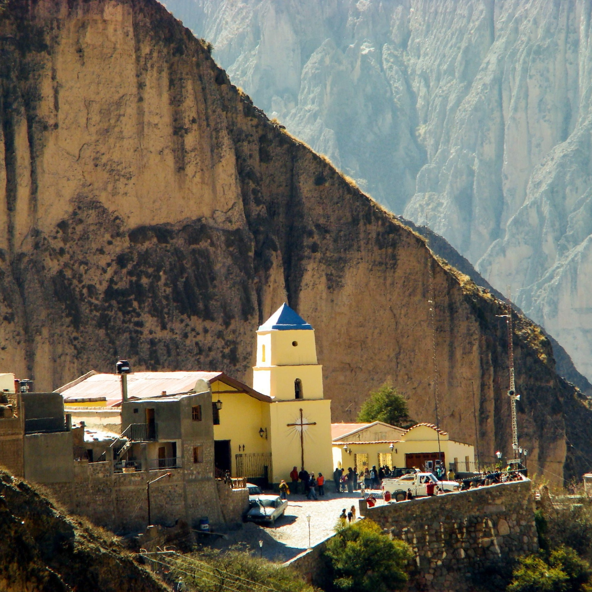

Iruya - SALTA
Descubre el encanto de Iruya, un pueblo serrano en la provincia de Salta. Sus calles empedrades y casas de adobe te transporataran a una epoca pasada. Disfruta del paisaje andino y la hospitalidad de su gente.
Descubre el encanto de Iruya, un pueblo serrano en la provincia de Salta. Sus calles empedrades y casas de adobe te transporataran a una epoca pasada. Disfruta del paisaje andino y la hospitalidad de su gente.
El pueblo de los siete colores. Un lugar magico en el corazon de la Quebrada de Humahuaca.
Un valle fertil rodeado de montañas y viñedos. De la mano del Atuel podras disfrutar un monton de actividades al aire libre y explorar la naturaleza.
Un oasis en el desierto. No te pierdas el impresionante del vaalle de Antofagasta rodeado de montañas y volcanes.
Recorre el Circuito chico, un trayecto escenico que te llevara por los lagos y montañas de Bariloche. Disfruta del paisaje patagonico y la naturaleza en estado puto. Un lugar ideal para realizar actividades al aire libre.
Un pueblo pinterosco en el corazon de la sierra de Cordoba. Camina por suscalles empedrades y admira la arquitectura colonial, un lugar perfecto para relajarse y disfrutar de la naturaleza, junto al sonido del rio.